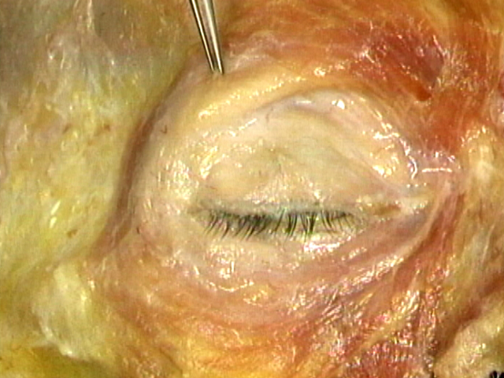
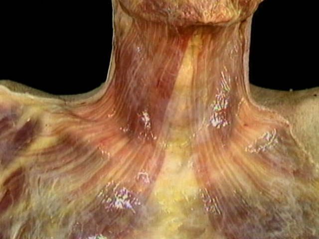

ГОЛОВА И ШЕЯ
Поддержка и движение головы:
Скелет лица и основание черепа:
Носовая полость и ее окрестности:
Ротовая полость и ее окрестности:
Гортань и ее окрестности:
Мышцы лица и скальп:
Мозг и его окружение:
Нервы головы и шеи:
Кровеносные сосуды головы и шеи:
Глаз и его окружение:
Ухо:
 4.6.1 Мышцы верхней части лица (3:34)
 4.6.2 Мышцы нижней части лица (1:34)
4.6.3. Кожа головы (3:15)
4.6.4 Обзор мышц лица и кожи головы (1:12)
 4.1.4. Затылочные и височные кости, внутренние особенности (1:03)
4.1.4. Затылочные и височные кости, внутренние особенности (1:03) 4.1.12 Мышцы передней шеи (1:34)
4.1.12 Мышцы передней шеи (1:34) 4.8.6 Ориентация на верхнечелюстные и нижнечелюстные нервы (черепные нервы V2, V3) (2:25)
4.8.6 Ориентация на верхнечелюстные и нижнечелюстные нервы (черепные нервы V2, V3) (2:25) 4.10.5 Веки (4:00)
4.10.5 Веки (4:00)